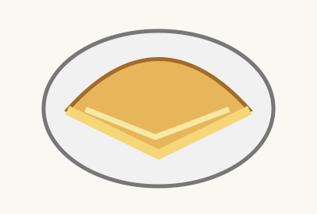

Daphnie Jones - Breakfast Recipes
Breakfast Quesadilla

Ingredients
- 2 flour tortillas
- 2 eggs
- 1/2 cup shredded cheese
- 1 tablespoon butter
- Salt and pepper
Instructions
- Scramble the eggs in a pan with butter.
- Place one tortilla in the pan and add eggs and cheese.
- Cover with the second tortilla and cook until golden on both sides.
- Cut into wedges and serve.